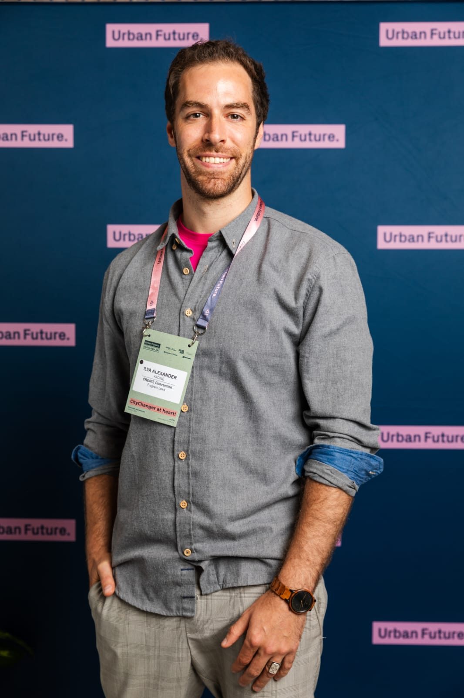

Ilya Alexander Yacine
A conversation. A shared path.
I'm Ilya.
Your partner
in change.
Leading change means bringing many perspectives together. It can feel lonely. You do not have to navigate it alone.
Since 2019, I have helped people and organizations turn complex challenges into shared possibilities for action across business, government and research.
As a coach, facilitator and Senior Consultant for Organizational Change Management at adesso SE, I connect systems thinking with practical implementation. My guiding perspective is to understand organizations as living systems.
Through AIRFLOW, I combine Flow Science, Biomimicry and AI: exploring conditions for focused work, learning from adaptive living systems and shaping technology to support human and collective intelligence. In Organizational Development, this becomes practical work on roles, decision processes, leadership and collaboration. Small experiments, feedback and regeneration create a framework for learning together.
Explore qualifications & experience Let's get to know each otherLearning that shapes my work
Qualifications.
Knowledge into practice.
Education and training in change, leadership and human-centered innovation, complemented by my academic background.
-
Manager for Applied AI Transformation
Shaping AI initiatives through the interaction of technology, organization and people.
-
Certified Change Practitioner
Supporting structured change processes and involving the people affected.
-
Transformation facilitation & Organizational Development
Taking a systemic view of change and strengthening organizational capacity to develop.
-
Integral leadership training
Reflecting on leadership and connecting different perspectives on collaboration.
-
Facilitator for Global Transformation
Supporting transformation and creating spaces for shared learning and development.
-
Design Thinking · Basic & Advanced Track
Human-centered innovation; developing an innovation concept for the City of Potsdam administration.
-
Urban Nature: Connecting Cities, Nature and Innovation
Exploring connections between nature, urban development and innovation.
-
The Future of Work: Preparing for Disruption
Understanding changes in the world of work and their implications for organizations.
-
Certified Scrum Master
Supporting agile collaboration, clear roles and continuous team learning.
-
u.lab 0x: Leading Awareness-Based Systems Change
Awareness as a starting point for systems change: “How to Sense and Actualize the Future”.
-
M.A. Urban Futures
Focus: new work in the public sector, project and transformation management, Organizational Development, futures research and systems modeling.
-
B.A. Cultural & Social Anthropology
Focus: work and organizational cultures. Minors: social psychology, peace and conflict studies, and political science.
My professional journey
A path of
many connections.
From futures research and public innovation to Organizational Development and regenerative leadership.
From the present back to the beginning-
10/2024 – present
Senior Consultant
adesso SE · Competence Centre Organizational Change Management, Berlin
Change management consulting across government, automotive, banking and healthcare. Supporting teams and leaders, building the internal change management community and contributing to the AI office with a focus on Organizational Change Management.
-
02/2022 – 05/2024
Program Manager
DigitalService GmbH des Bundes · Berlin
Designing, planning and delivering the Tech4Germany 2022 and Work4Germany 2023 and 2024 fellowship programs. Leading the internal “Learning Organization” project, facilitating team sessions and founding an AI Community of Practice.
-
04/2021 – 02/2022
Project Coordinator
Responsible Innovation Network GmbH · Biomimicry Academy, Berlin
Coordinating the Biomimicry Academy education program and the cobiom collaboration platform. Curating the European biomimicry network, managing stakeholders and clients, and facilitating program development workshops.
-
02/2019 – 01/2022
Team Lead, Scrum Master & Digital Advisor
Lecos GmbH · Digitale Werkstatt, Leipzig
Initiating and coordinating innovation projects with the City of Leipzig, developing and coaching agile teams, and designing interdisciplinary transformation formats. Building a city-wide innovation network; from 2021, also advising the deputy mayor responsible for IT and administrative modernization.
-
06/2018 – 01/2019
Research Associate
University of Applied Sciences Potsdam · Institute for Applied Research in Urban Futures
Researching new work in digital environments and public administration through THEMIS.COG: developing research designs, collecting and analyzing qualitative and quantitative data, and writing and editing academic publications.
-
10/2017 – 06/2018
HR Assistant
2bAhead ThinkTank GmbH · Leipzig
Coordinating recruitment and improving onboarding processes. Contributing to organizational culture, staff development and team development.
-
03/2014 – 10/2016
Founder & Director
Offenes Haus Marburg (OHM) · Marburg
Founding and leading an urban cultural initiative, including team coordination, communications, event management and administration.
Approaches that shape my work